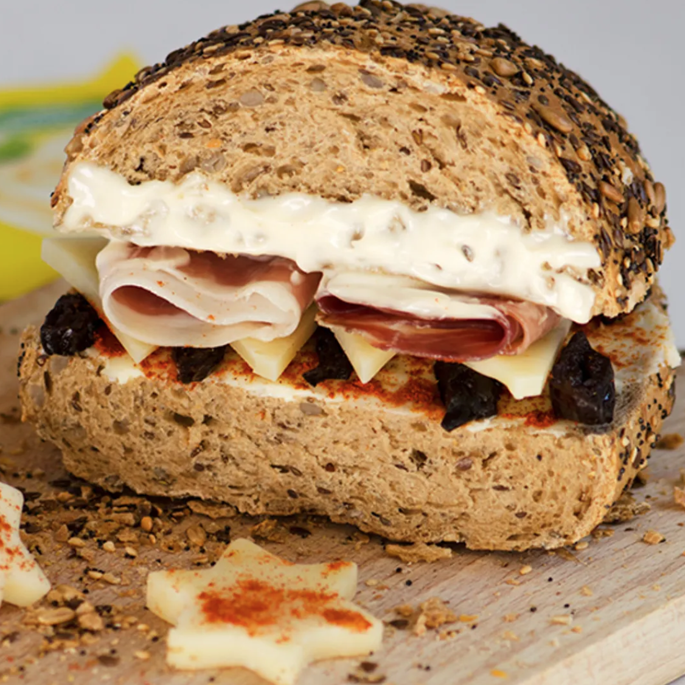

Mediterranean sandwich
Main page

Description
This sandwich is something you definitely want to try!
Ingredients
- wholemeal bread with seeds
- 1 tablespoon cream
- red paprika powder (hot)
- 4 slices of hard cheese
- 3 prunes (sliced)
- 2 slices of prosciutto
- mayonnaise
Steps
- Cut the bread in half, spread cream on the lower half and sprinkle a little paprika powder
- Arrange sliced prunes and cheese
- Put 2 slices of rolled prosciutto over the cheese
- Coat the top half of the bread with mayonnaise and cover the sandwich